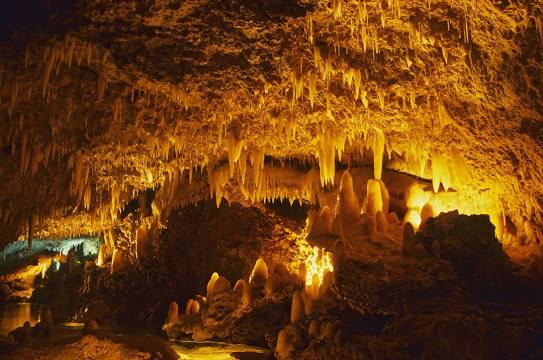
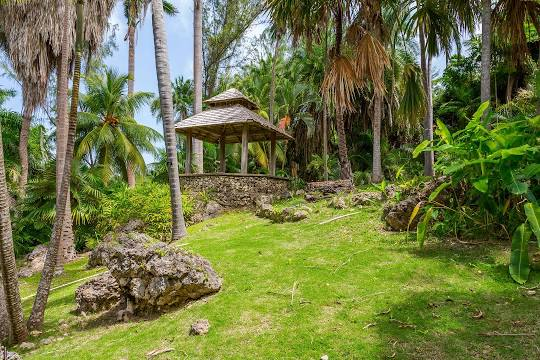
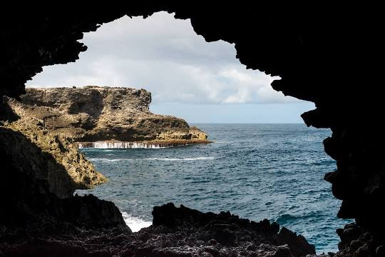
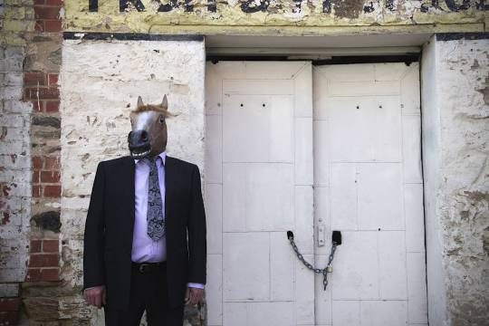

Barbados is a coral island, pushed out of sea by volcanic activity in a far away time. On the West Coast of Barbados,coralshore beaches of fine white sand stretch along a blue-green sea. Coral reefs fringe the Barbados shoreline to provide excellent snorkeling and Scuba Diving. Along the East Coast a lively surf is blown briskly by the strong and constant trade winds and the waves pound against a rocky shore. The constant breezes of the trade winds give Barbados a mild and pleasant tropical climate
| Attraction | Description | Rating |
|---|---|---|
| Harrison's Cave Eco-Adventure Park: click image  | Harrison's Cave is a tourist attraction in the country of Barbados, first mentioned in 1795. Tourists can access the subterranean environment on a tramway | 4.6/5 |
| Andromeda Botanic Gardens: click image  | Andromeda Botanic Gardens is an 8-acre botanical garden and a historic cultural attraction in the village of Bathsheba, Saint Joseph in Barbados. It is an authentic garden created by multiple award-winning horticulturalist Iris Bannochie, a female, Barbadian, self-taught scientist. It is unique, having been created from the 1950s as both a private botanical garden and a pleasure garden by an individual. | 4.6/5 |
| Animal Flower Cave & Restaurant: click image  | The Animal Flower Cave is located under the cliffs at North Point, St. Lucy, Barbados. It is the island's lone accessible sea cave. It was discovered by its seaward entrance in 1780 by two English explorers. | 4.5/5 |
| Barbados Museum & Historical Society: click image  | The Barbados Museum & Historical Society is a private organization but membership is open to both members and non-members who are interested in the numerous collections. Established in 1933 in the old Military Prison at the Saint Ann's historic Garrison, the museum has more than 500,000 artifacts that depict the islands rich history and natural history. | 4.3/5 |